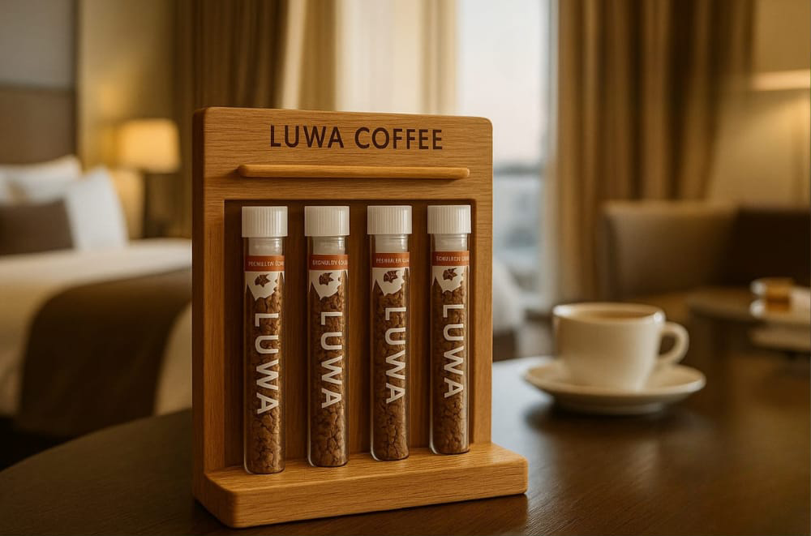

Biz kahveyi sadece bir içecek değil, anı değerli kılan bir ritüel olarak görüyoruz. Her tüp, sıradan bir granül kahveden fazlasıdır; tasarımında zarafet, içindeki kahvede özen vardır.
Satın al 🛒

Konforun ve estetiğin buluştuğu otel odalarında, ikram deneyimini yeni bir seviyeye taşıyın. LUWA COFFEE’nin özel cam tüplerinde sunulan premium granül kahveleri, sade bir kahve anını prestijli bir deneyime dönüştürür.
Her detay, misafirlerinize "özel" hissettirmek için tasarlandı:
Misafirlerinize yalnızca kahve değil, estetik bir dokunuş sunun. LUWA COFFEE – Her Yudumda Lüks
Satın AlınHer şey, uzak diyarlardaki bir kahve tarlasında başladı. Sabahın ilk ışıklarıyla uyanan genç bir kız, elleriyle kahve çekirdeklerini topluyordu. Her tane, sabrın, emeğin ve kahveye duyulan sevginin bir yansımasıydı.
Biz, LUWA COFFEE olarak bu emeği ve hikâyeyi şehir hayatına taşımak istedik. Çünkü kahve yalnızca bir içecek değil, her anı değerli kılan bir deneyimdir.
Şık cam tüplerde sakladığımız granül kahvemiz, bir yudumda sizi o kahve tarlasının ruhuna götürür. Modern tasarımın zarafetiyle buluşan bu deneyim; otellerde, ofislerde ve evlerde lüks bir ikram kültürü yaratır.
LUWA, küçük bir tüpte saklı büyük bir yolculuktur. Her yudum, bir hikâye. Her hikâye, bir anıya dönüşür.